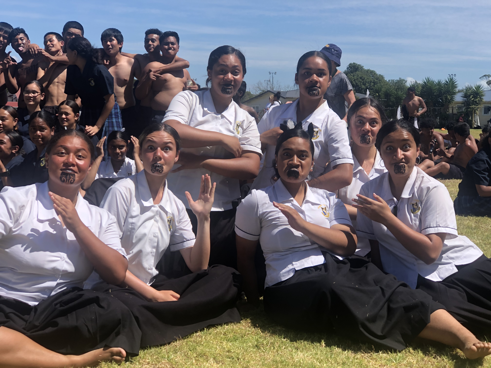
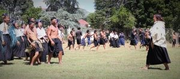
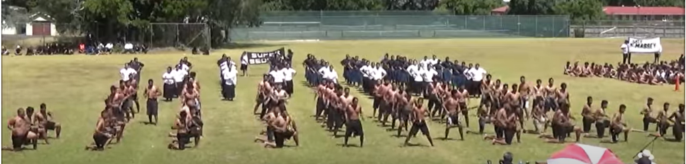
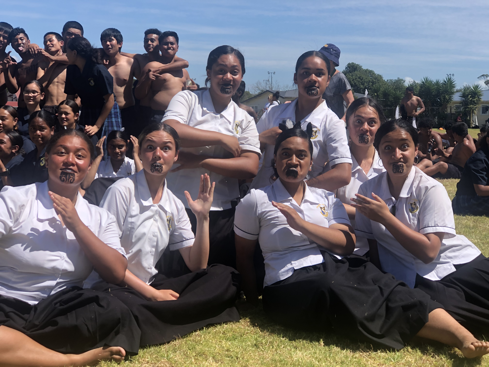
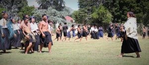
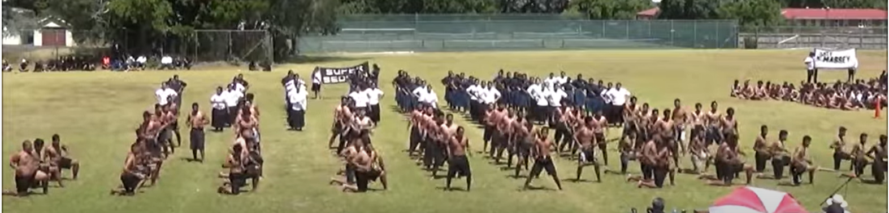

Māori have an extensive tradition of song and dance, with a broad range of styles. Waiata were written to mark important events such as the birth of a child or the death of a chief.
Waiata serve many functions. They can be used to support a whaikōrero (formal speech) or sung to express grief after a death. Waiata were used to help teach children, to urge people to take up a cause, or to mourn in times of loss. Waiata can record a tribe’s past by referring to ancestors, events and places. They are sometimes used to settle historical debates.
Traditional waiata are still sung on marae and at gatherings. New waiata continue to be written, often about current concerns.
Origins of waiata
Like many aspects of Māori culture, waiata are associated with myth. A woman who was skilled at performing waiata was compared to the goddess Hineruhi. Hineruhi is found at dawn, and her dance is the sparkle of light on morning dew. Hineruhi’s companion, Tānerore, is credited with the origin of haka.
The chief Tinirau was betrayed by his tohunga, Kae, who killed Tinirau’s pet whale. Tinirau got revenge on Kae after sending women to entertain him with waiata.
Raukatauri is the atua (deity) of music and Raukatamea is the atua of entertainment.